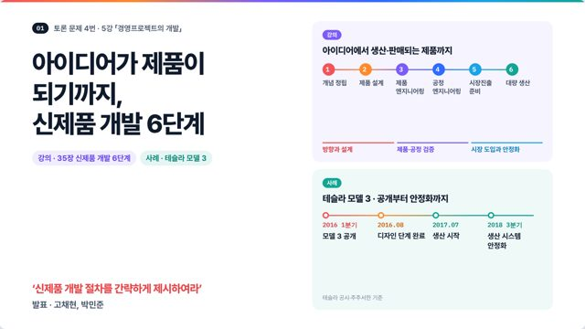
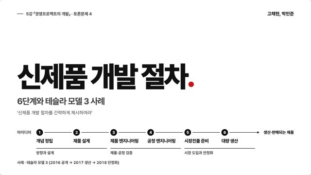
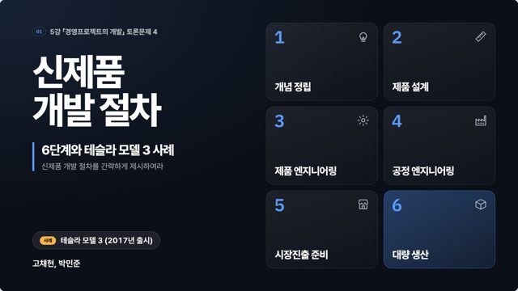
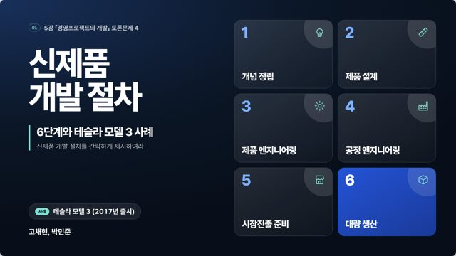
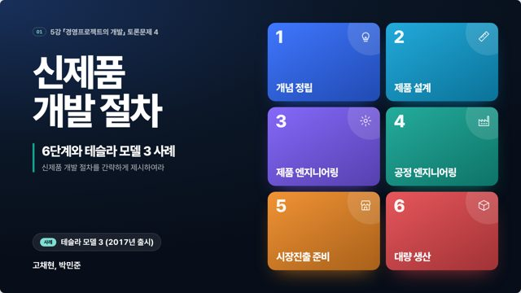
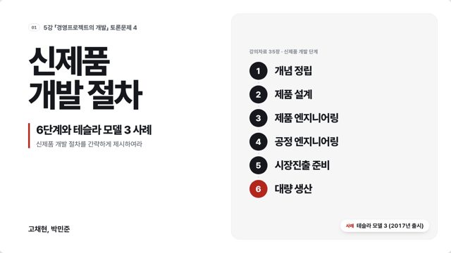
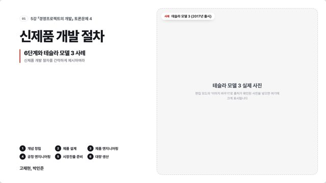
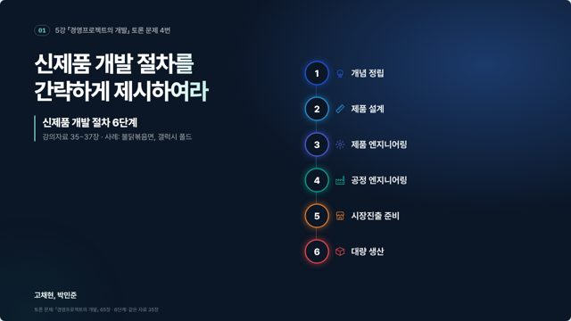
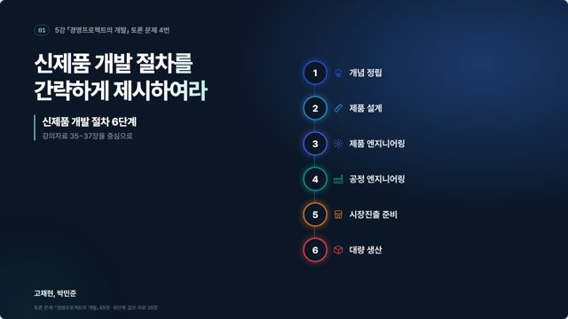

신제품 개발 절차 발표 · 버전 모음
10월 26일부터 지금까지 고친 HTML 23개입니다. 카드를 누르면 그 버전이 새 탭에서 열리고, 키보드 → 로 넘길 수 있습니다. 표지 그림은 각 버전의 1장입니다.
실제 모델 3 사진 3장 (위키미디어 공용)

참고 덱 느낌: 흰 바탕·단계별 색·연한 색 카드

화이트·차콜·레드, 단계 표시 통일, 장별 레이아웃
움직임 강화 (등장·선 그리기·사진 확대·진행 막대)
v13: 아티팩트에서도 굵은 한글 글꼴이 보이도록 Noto Sans KR 대체 글꼴 추가
v13: 크림 바탕·굵은 제목·빨강 강조, 제목 문장과 8장 숫자 강조
v12: 밝은 배경, 남색·파랑 강조
v11.1: 표지 모델 3 사진, 8장 생산 라인 사진

v11: 다크 디자인, 발표 구성 3카드, 키워드 강조 축소

v10: 06판 톤(파랑+주황 키워드), 목차 단순화, 사례 장 단계별 등장

v9.2: 어두운 컬러 표지, 단계별 색 복원

v9.1: 글자 크기 확대, 표지·사례 장 디자인 정리

v9: 6단계와 테슬라 모델 3 사례로 전면 수정
v8 단순화 — 6단계 표 → 31장 터널 → 단계별 진행과 사례
v7: 11장 재구성 (사례 축소, 점수표 예시 교체, 캐즘 삭제)

불닭·폴드 사례 6장 복원 (기사 사례 표시)

강의자료만으로 10장 재구성 (6단계 먼저, 외부 사례 삭제)
핵심 키워드 강조색 추가
캐즘·쉬운 예시·후속 제품, 사진과 움직임 추가
‘왜 신제품인가’ 장과 출시 이후 장 추가
5강 강의자료에 맞추고 사례 출처 표시
갤럭시 Z 폴드 세대별 개선 장 추가
첫 버전 · 불닭볶음면·갤럭시 폴드 사례